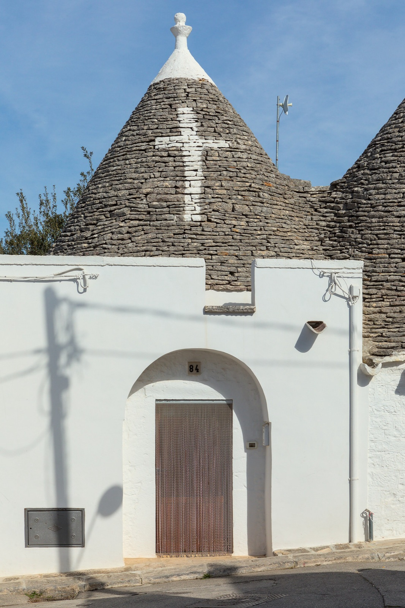
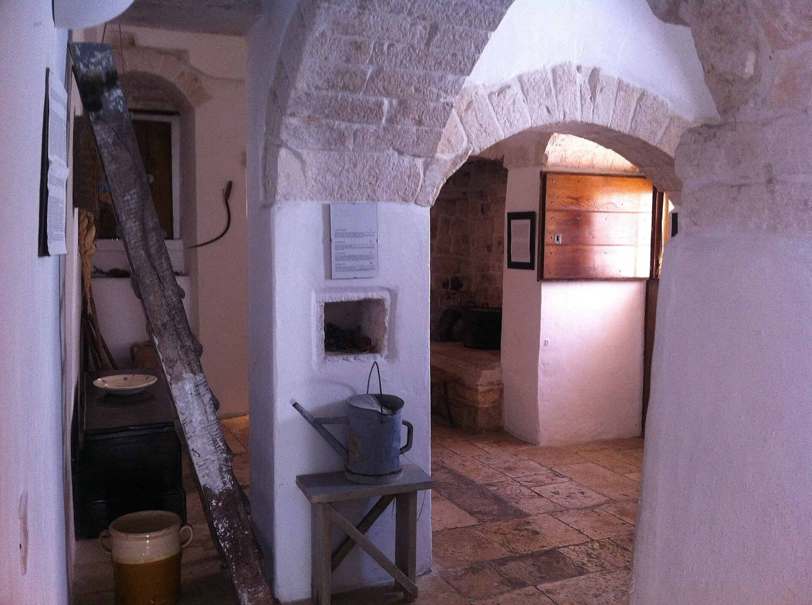

17 сентября · по дороге в Матеру
Альберобелло
Тысяча белых домиков с конусообразными крышами — будто целый город построили в сказке.
Тысяча белых домиков с конусообразными крышами — будто целый город построили в сказке.
По дороге из Бари в Матеру мы остановимся там, где архитектура похожа на детский рисунок.
Альберобелло — столица трулли, и таких мест больше нет нигде в мире. Целые кварталы белых домиков с серыми конусами крыш сбегают по склону, и кажется, будто попал внутрь сказки. С 1996 года город включён в список Всемирного наследия ЮНЕСКО.
 Море конических крыш
Море конических крыш
Трулло — это домик из местного известняка, сложенный насухо, вообще без раствора. Стены белят извёсткой, а крышу выкладывают из плоских каменных пластин в форме конуса, увенчанного резным навершием-пиннаклем.
По легенде, такую «сборно-разборную» технику придумали, чтобы быстро разбирать дома и уходить от налога на жильё. Сегодня это уникальное наследие, которое бережно хранят.

Рионе-МонтиСамый зрелищный квартал — Рионе-Монти: около тысячи трулли вдоль мощёных улочек, сегодня в них мастерские и лавки. Напротив, через дорогу, лежит Айя-Пиккола — тихий жилой район, где трулли остались такими, какими были для местных жителей.
На некоторых крышах белой извёсткой нарисованы знаки — религиозные, языческие и астрологические символы, смысл которых давно стал загадкой.

Внутри труллоВнутри трулло прохладно даже в жару: толстые каменные стены держат тепло зимой и прохладу летом. Единственный двухэтажный трулло — Трулло-Соврано XVIII века — сегодня превращён в музей, где можно увидеть, как был устроен быт.
Низкие своды, побелённые стены, очаг и ниши — простое и удивительно уютное пространство.
Самый большой квартал трулли с лавками и мастерскими.
Тихий жилой район с аутентичными трулли.
Единственный двухэтажный трулло — музей XVIII века.
Загадочные знаки, нанесённые извёсткой.
Храм, построенный в форме трулло.
Вид на «море крыш» с террасы над кварталом.
Нажмите на фотографию, чтобы рассмотреть ближе.
Белоснежные домики с конусами крыш создают ощущение, будто мы попали в сказку.